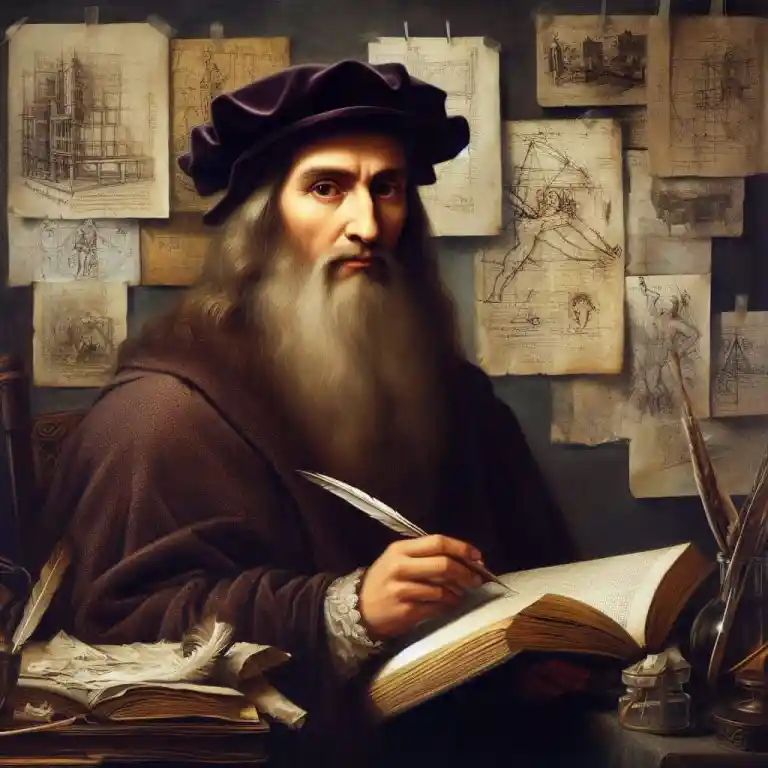

Some have called this man the smartest human to have ever lived. He has created timeless art pieces, helped to better understand our anatomy, and even predicted the age of flight 400 years before!
Interesting Facts About Leonardo
- 1452 Leonardo was born in Vinci, the son of the notary Ser Piero da Vinci and a young woman named Caterina. He was considered to be an illegitimate child.
- Leonardo had a very unique way of handwriting: a difficult-to-read graphic sign traced from right to left by reversing the letters. It was only comprehensible when his work was reflected in a mirror. Although many believe this was Leonardo's way of hiding his plans and thoughts, it was actually just his natural tendency as a lefty. By writing to right to left with his left hand, he also did not risk smudging or erasing with his hand.
- He had quite a large family including 9 brothers and 3 sisters. The names of the brothers are Benedetto Ser Piero, Giuliomo Ser Piero, Domenico Ser Piero, Guglielmo Ser Piero, Bartolomeo da Vinci, Giovanni Ser Piero, Antonio Ser Piero, Lorenzo Ser Piero, and Pandolfo Ser Piero. And the names of the sisters are Magdalena di Ser Piero da Vinci, Violante di Ser Piero da Vinci, and Margherita di Ser Piero da Vinci.
- 1503-1506 Many believe that Mona Lisa was first painted in Florence. While the Louvre claims it was unquestionably painted between these time periods, Martin Kemp, an art historian, notes that it is difficult to confirm the dates.
- Nicu Sebe at the University of Amsterdam in the Netherlands tested emotion-recognition software on the famous Mona Lisa smile. The face-recognition software determined that Leonardo's painting, Mona Lisa, is 83% happy, 9% disgusted, 6% fearful, and 2% angry.
- People think that Lisa Gherardini is Mona Lisa and the subject of the painting. She was the wife of Francesco del Giocondo, a wealthy Florentine silk merchant. Historians believe Francesco commissioned the painting to celebrate the birth of Andrea, his second son.